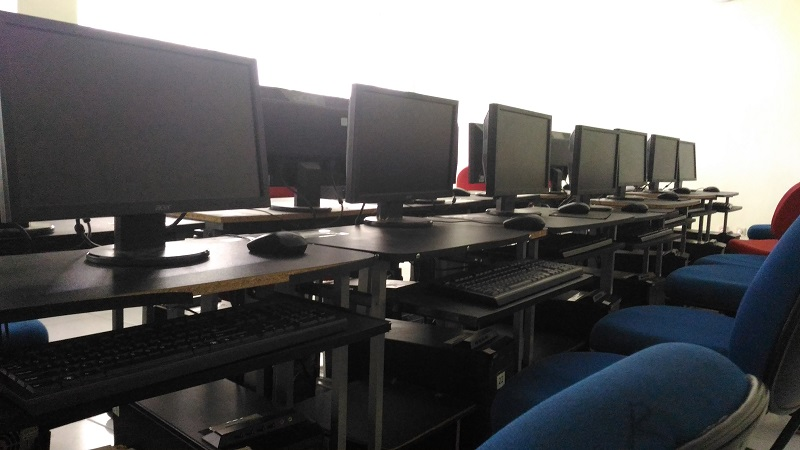

LAB TEKNIK INFORMATIKA DAN POLINDRA

LAB SISTEM OPERASI
Pada laboratorium ini diselenggarakan praktikum Sistem Operasi , Arsitektur Komputer dan pemrograman aplikasi mobile, adapun fasilitas dan aktifitasnya sebagai berikut:

LAB BASIS DATA
Pada laboratorium ini diselenggarakan praktikum Basisdata dan struktur data, adapun fasilitas dan aktifitasnya sebagai berikut:

LAB JARINGAN KOMPUTER
Pada laboratorium ini diselenggarakan praktikum Sistem Operasi, Jaringan Komputer 1, admin dan keamanan jaringan, jaringan nirkabel dan Jaringan Komputer 2.

LAB MULTIMEDIA
Pada laboratorium ini diselenggarakan praktikum Desain Grafis dan Multimedia.
.......
 LAB PEMROGRAMAN
Di laboratorium ini diselenggarakan praktikum Pemrograman Terstruktur, Algoritma, software engineering, pemrograman berbasis obyek.